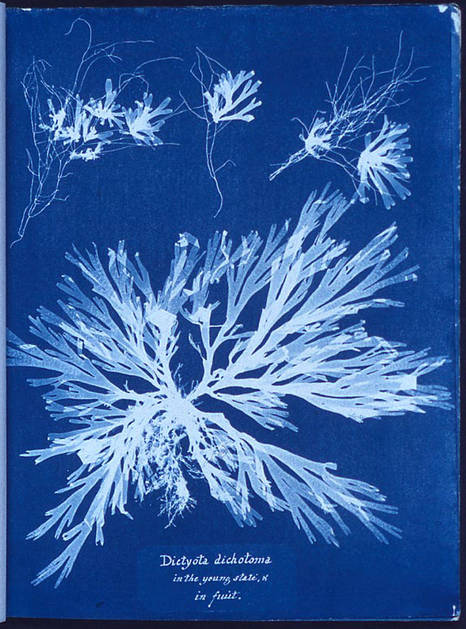
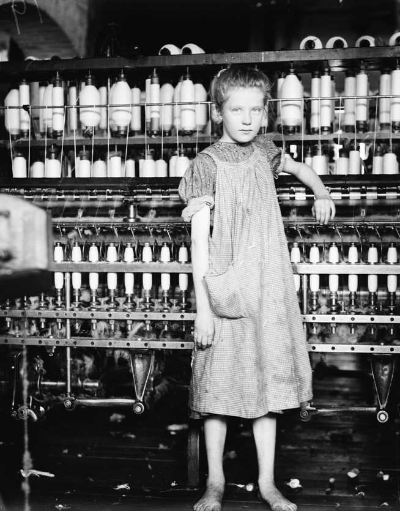
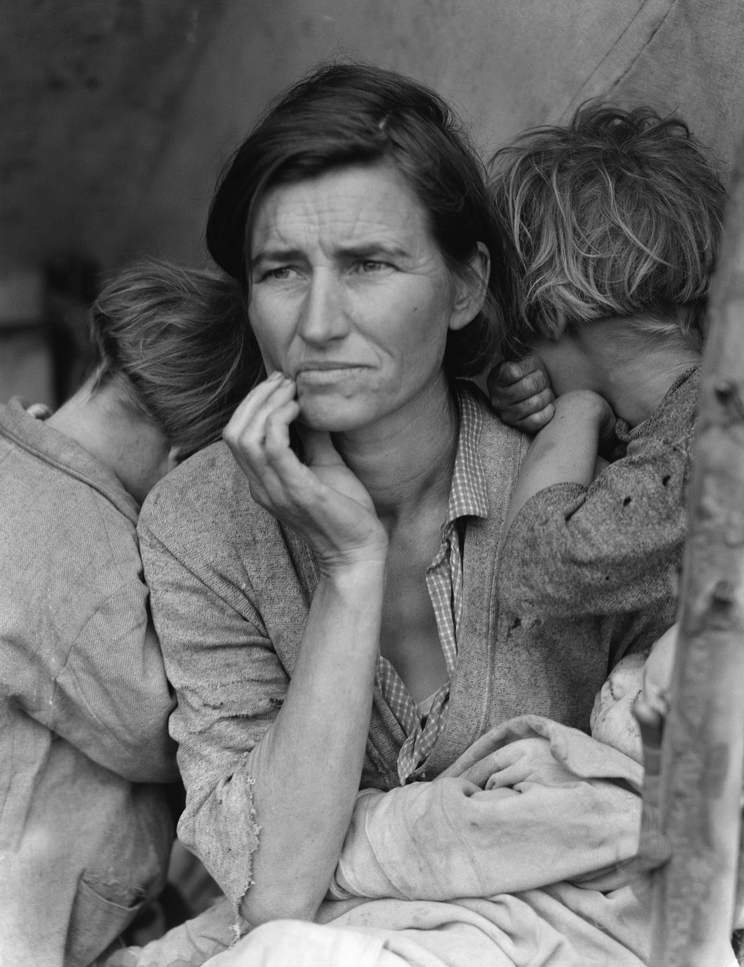

A public record for a photograph
Permanent provenance of art history.
I built OnPlate because a photograph is a file, and a file that lives on someone’s website is only as lasting as that website. Provenance is the record of what a work is, and who has held it. I want that record to outlast a page.
When you walk into a museum, the object is there. You can stand in front of the paper, the plate, the print. Online we have mostly accepted a weaker version of that: a picture that points somewhere else, and a history that can be moved, copied, or taken down without the original file coming with it.
OnPlate keeps the photograph itself on Ethereum, a public record anyone can read. All of it sits in one place: the file, a fingerprint of that file, the name of the work, and who holds it. A later viewer does not have to trust this site. They can pull the picture back from the record itself.
This is a provenance tool. Photo archives, university collections, galleries, and independent artists can mount a work once and keep the original file readable for as long as that public record is kept.
Add a photograph View the photographs
Who it is for
- Photo archives that need a public, durable copy of a digital master whose paper or plate original is unique, lost, or hard to visit.
- University collections that teach with scans and want the file, its fingerprint, and who holds it in one place a student can check.
- Galleries that sell or loan a single digital print and need a holder that stays with that print, not with a listing that can wander off.
- Independent artists who want the photograph itself kept, and a way to park it that can only send it home.
What anyone may store
Anyone may store a photograph up to about 74 KB — a small JPEG, on purpose, so you can begin right away. The pictures below are historic public-domain photographs packed down to that size so you can see the limit with your eyes, not as a number. The originals are unique plates, government negatives, or NASA frames. The copies people share often lose that home.
-

View from the Window at Le Gras Nicéphore Niépce, c. 1826–27. The earliest surviving camera photograph. The pewter plate is unique. -

Boulevard du Temple Louis Daguerre, 1838. An early daguerreotype of a city. The original plate has spent long stretches with an uncertain home. -

Dictyota dichotoma Anna Atkins, from Photographs of British Algae, 1843. The first book made of photographs. The original cyanotypes are few. -

Addie Card, 12 years old Lewis Hine, 1910. A numbered National Child Labor Committee plate. Reproductions often drop the caption. -

Migrant Mother Dorothea Lange for the U.S. Farm Security Administration, 1936. A government negative whose copies rarely name the FSA plate. -

Earthrise William Anders / NASA, Apollo 8, 1968. A Hasselblad frame. The original magazine is in NASA’s archive.
Each picture above is a JPEG packed to that open size. Sources and licenses are in examples/SOURCES.md.
How a photograph is kept
The file is written into that public record in pieces small enough to store safely. OnPlate then keeps a plate for the work: the fingerprint of the file, a small thumbnail, the name of the photograph, and who holds it. The photograph is not something you can toss to any marketplace. If you need it off your wall, you park it at an address you choose, and that address can only send it home. I used the same idea on Stillwater.
If you would like to store a larger photograph, send me the public address of the account that will store it, in a direct message on X to @A_is_A. I whitelist by hand. That is boutique curation: it raises the upload size for that account.
This page is only a way in. The photograph lives in the record.